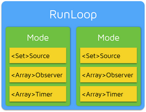

RunLoop
线程只能执行一次任务，执行完任务只有便退出，RunLoop 是通过内部维护的事件循环来对事件/消息进行管理的一个对象
优点
- 程序能够一直运行并且接受用户的输入
- 调用解耦，主调方产生很多事件，不用等到被调用方处理完事件之后，才执行其他操作
- 没有消息需要处理时，休眠以避免资源占用
用户态 -> 内核态
- 有消息处理时，立刻被唤醒
内核态 -> 用户态
每个 RunLoop 都包含若干个 Mode，每个 Mode 又包含若干个 Source/Timer/Observer；RunLoop 只能在一种 Mode 下面执行，当需要切换 Mode 的时候，就必须退出当前 RunLoop，重新进入 RunLoop。Source/Timer/Observer 被统称为 Item，一个 Item 可以被同时加入多个 Mode，如果一个 Mode 中一个 Item 都没有，则 RunLoop 会直接退出，不进入循环

{
CFRunLoop {
pthread // RunLoop 和 线程一一对应，其关系保存在一个全局的字典中
currentMode // CFRunLoopMode
modes // NSMutableSet<CFRunLoopMode>
commonModes // NSMutableSet<NSString *>
commonModeItems // Observer / Timer / Source
}
Mode CFRunLoopMode {
name // NSDefaultRunLoopMode
source0 // 需要手动唤醒线程
source1 // 具备唤醒线程的能力
observers
timers
}
CFRunLoopCommonModes {
- commonMode 不是实际存在的一种 Mode
- 是同步 Source/Timer/Observer 到多个 Mode 中的一种技术方案
}
Source {
Source0
Source1
Timer Source
}
Timer CFRunLoopTimer { 基于事件的定时器
一个 Timer 如何添加到多个 Mode
}
Observer CFRunLoopObserver { 观测时间点
kCFRunLoopEntry
kCFRunLoopBeforeTimers
kCFRunLoopBeforeSources
kCFRunLoopBeforeWaiting // 即将切换到内核态
kCFRunLoopAfterWaiting // 切换到用户态之后
kCFRunLoopExit
}
接收消息
处理消息
等待不等于死循环
}
NSRunLoop 是 CFRunLoop 的封装，面向对象的 API
Timer / PerformSelector
RunLoop 的执行过程
1. 即将进入 RunLoop
2. 将要处理 Timer/Source0 事件
3. 处理 Source0 事件
4. 如果有 Source1 要处理，跳转 [8]
5. 线程将要休眠
6. 休眠等待唤醒 (Source1, Timer 事件，外部手部唤醒)
7. 线程刚被唤醒
8. 处理唤醒时收到的消息，跳转 [2]
9. 即将退出 RunLoop

常见问题
滑动 TableView 的时候我们定时器还会生效吗
kCFRunLoopDefaultMode --Mode 发生转换--> UITrackingRunLoopMode
利用 CommonMode 标记，然后将 Timer 添加到多个 Mode 中
RunLoop 和 PerformSelector
当调用 NSObject 的 performSelector:afterDelay: 后，实际上其内部会创建一个 Timer 并添加到当前线程的 RunLoop 中，所以如果当前线程没有 RunLoop，则这个方法会失效，如果有 RunLoop 也需要 run 起来
当调用 performSelector:onThread: 时，实际上其会创建一个 Timer 加到对应的线程去，同样的，如果对应线程没有 RunLoop 该方法也会失效
RunLoop 和 多线程
线程是和 RunLoop 一一对应的
自己默认创建的线程默认是没有 RunLoop 的
主线程中的 MainRunLoop 默认是创建并且运行激活的
RunLoop 的销毁是发生在线程结束时
一个线程里面是可以开启多个 RunLoop，只能嵌套在大 RunLoop 中
怎样实现一个常驻线程
为当前线程开启一个 RunLoop（currentRunLoop 懒加载）
向该 RunLoop 中添加一个 Port/Source 等维持 RunLoop 的事件循环
启动 RunLoop
while(runAlways) {
@autoreleasepool {
CFRunLoopRunInMode(until: future)
}
}